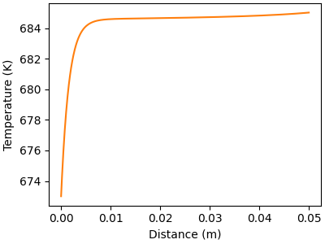
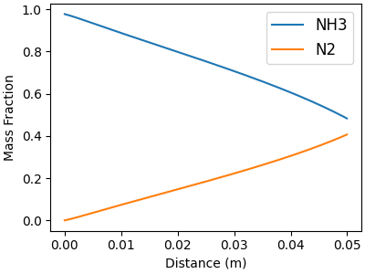

Note
Go to the end to download the full example code.
One-dimensional packed-bed, catalytic-membrane reactor#
The model shown in this example simulates heterogeneous catalytic processes inside
packed-bed, catalytic membrane reactors. The gas-phase and surface-phase species
conservation equations are derived and the system of differential-algebraic equations
(DAE) is solved using the scikits.odes.dae IDA solver.
Requires: cantera >= 3.0.0, matplotlib >= 2.0, scikits.odes >= 2.7.0
Methodology#
A one-dimensional, steady-state catalytic-membrane reactor model with surface chemistry is developed to analyze species profiles along the length of a packed-bed, catalytic membrane reactor. The same model can further be simplified to simulate a simple packed-bed reactor by excluding the membrane. The example here demonstrates the one-dimensional reactor model explained by G. Kogekar [1].
Governing equations#
Assuming steady-state, one-dimensional flow within the packed bed, total-mass, species mass and energy conservation may be stated as [2]:
The fractional coverages of the \(K_\t{s}\) surface adsorbates \(\theta_k\) must satisfy
which, at steady state, requires no net production/consumption of surface species by the heterogeneous reactions [3].
The pressure within the bed is calculated as:
where \(\mu\) is the gas-phase mixture viscosity. The packed-bed permeability :math:beta_t{g}` is evaluated using the Kozeny-Carman relationship as
where \(\phi_\t{g}\), \(\tau_\t{g}\), and \(D_\t{p}\) are the bed porosity, tortuosity, and particle diameter, respectively.
The independent variable in these conservation equations is the position \(z\) along the reactor length. The dependent variables include total mass flux \(\rho u\), pressure \(p\), temperature \(T\), gas-phase mass fractions \(Y_k\), and surfaces coverages \(\theta_k\). Gas-phase fluxes through the membrane are represented as \(j_{k, \t{M}}\). Geometric parameters \(A_\t{s}\), \(P_\t{b}\), and \(A_\t{b}\) represent the catalyst specific surface area (dimensions of surface area per unit volume), reactor perimeter, and reactor cross-sectional flow area, respectively. Other parameters include bed porosity \(\phi_\t{g}\) and gas-phase species molecular weights \(W_k\). The gas density \(\rho\) is evaluated using the equation of state (such as ideal gas, Redlich-Kwong or Peng-Robinson).
If a perm-selective membrane is present, then \(j_{k_\t{M}}\) represents the gas-phase flux through the membrane and \({k_\t{M}}\) is the gas-phase species that permeates through the membrane. The Kronecker delta, \(\delta_{k, k_\t{M}} = 1\) for the membrane-permeable species and \(\delta_{k, k_\t{M}} = 0\) otherwise. The membrane flux is calculated using Sieverts law as
where \(B_{k_\t{M}}\) is the membrane permeability, \(t\) is the membrane thickness. \(p_{k_\t{M} \text{, mem}}\) and \(p_{k_\t{M} \text{, sweep}}\) represent perm-selective species partial pressures within the packed-bed and the exterior sweep channel. The present model takes the pressure exponent \(\alpha\) to be unity. The membrane flux for all other species (\(k \neq k_\t{M}\)) is zero.
Chemistry mechanism#
This example uses a detailed 12-step elementary micro-kinetic reaction mechanism that describes ammonia formation and decomposition kinetics over the Ru/Ba-YSZ catalyst. The reaction mechanism is developed and validated using measured performance in a laboratory-scale packed-bed reactor [4]. This example also incorporates a Pd-based H perm-selective membrane.
Solver#
The above governing equations represent a complete solution for a steady-state packed-bed, catalytic membrane reactor model. The dependent variables are the mass-flux \(\rho u\), species mass-fractions \(Y_k\), pressure \(p\), temperature \(T\), and surface coverages \(\theta_k\). The equation of state is used to obtain the mass density, \(\rho\).
The governing equations form an initial value problem (IVP) in a differential-algebraic (DAE) form as follows:
where \(\bf y\) and \(\bf y'\) represent the state vector and its derivative
vector, respectively. All other constants such as reference temperature, chemical
constants, etc. are incorporated in vector \(\bf c\) (Refer to [1] for more
details). This type of DAE system in this example is solved using the
scikits.odes.dae IDA solver.
Import Cantera and scikits#
import numpy as np
from scikits.odes import dae
import cantera as ct
import matplotlib.pyplot as plt
Define gas-phase and surface-phase species#
# Import the reaction mechanism for Ammonia synthesis/decomposition on Ru-Ba/YSZ catalyst
mechfile = "example_data/ammonia-Ru-Ba-YSZ-CSM-2019.yaml"
# Import the models for surface-phase and gas
surf = ct.Interface(mechfile, "Ru_surface")
gas = surf.adjacent["gas"]
# Other parameters
n_gas = gas.n_species # number of gas species
n_surf = surf.n_species # number of surface species
n_gas_reactions = gas.n_reactions # number of gas-phase reactions
# Set offsets of dependent variables in the solution vector
offset_rhou = 0
offset_p = 1
offset_T = 2
offset_Y = 3
offset_Z = offset_Y + n_gas
n_var = offset_Z + n_surf # total number of variables (rhou, P, T, Yk and Zk)
print("Number of gas-phase species = ", n_gas)
print("Number of surface-phase species = ", n_surf)
print("Number of variables = ", n_var)
Number of gas-phase species = 4
Number of surface-phase species = 6
Number of variables = 13
Define reactor geometry and operating conditions#
# Reactor geometry
L = 5e-2 # length of the reactor (m)
R = 5e-3 # radius of the reactor channel (m)
phi = 0.5 # porosity of the bed (-)
tau = 2.0 # tortuosity of the bed (-)
dp = 3.37e-4 # particle diameter (m)
As = 3.5e6 # specific surface area (1/m)
# Energy (adiabatic or isothermal)
solve_energy = True # True: Adiabatic, False: isothermal
# Membrane (True: membrane, False: no membrane)
membrane_present = True
membrane_perm = 1e-15 # membrane permeability (kmol*m3/s/Pa)
thickness = 3e-6 # membrane thickness (m)
membrane_sp_name = "H2" # membrane-permeable species name
p_sweep = 1e5 # partial pressure of permeable species in the sweep channel (Pa)
permeance = membrane_perm / thickness # permeance of the membrane (kmol*m2/s/Pa)
if membrane_present:
print("Modeling packed-bed, catalytic-membrane reactor...")
print(membrane_sp_name, "permeable membrane is present.")
# Get required properties based on the geometry and mechanism
W_g = gas.molecular_weights # vector of molecular weight of gas species
vol_ratio = phi / (1 - phi)
eff_factor = phi / tau # effective factor for permeability calculation
# permeability based on Kozeny-Carman equation
B_g = B_g = vol_ratio**2 * dp**2 * eff_factor / 72
area2vol = 2 / R # area to volume ratio assuming a cylindrical reactor
D_h = 2 * R # hydraulic diameter
membrane_sp_ind = gas.species_index(membrane_sp_name)
# Inlet operating conditions
T_in = 673 # inlet temperature [K]
p_in = 5e5 # inlet pressure [Pa]
v_in = 0.001 # inlet velocity [m/s]
T_wall = 723 # wall temperature [K]
h_coeff = 1e2 # heat transfer coefficient [W/m2/K]
# Set gas and surface states
gas.TPX = T_in, p_in, "NH3:0.99, AR:0.01" # inlet composition
surf.TP = T_in, p_in
Yk_0 = gas.Y
rhou0 = gas.density * v_in
# Initial surface coverages
# advancing coverages over a long period of time to get the steady state.
surf.advance_coverages(1e10)
Zk_0 = surf.coverages
Modeling packed-bed, catalytic-membrane reactor...
H2 permeable membrane is present.
Define residual function required for IDA solver#
def residual(z, y, yPrime, res):
"""Solution vector for the model
y = [rho*u, p, T, Yk, Zk]
yPrime = [d(rho*u)dz, dpdz, dTdz, dYkdz, dZkdz]
"""
# Get current thermodynamic state from solution vector and save it to local variables.
rhou = y[offset_rhou] # mass flux (density * velocity)
Y = y[offset_Y : offset_Y + n_gas] # vector of mass fractions
Z = y[offset_Z : offset_Z + n_surf] # vector of site fractions
p = y[offset_p] # pressure
T = y[offset_T] # temperature
# Get derivatives of dependent variables
drhoudz = yPrime[offset_rhou]
dYdz = yPrime[offset_Y : offset_Y + n_gas]
dZdz = yPrime[offset_Z : offset_Z + n_surf]
dpdz = yPrime[offset_p]
dTdz = yPrime[offset_T]
# Set current thermodynamic state for the gas and surface phases
# Note: use unnormalized mass fractions and site fractions to avoid
# over-constraining the system
gas.set_unnormalized_mass_fractions(Y)
gas.TP = T, p
surf.set_unnormalized_coverages(Z)
surf.TP = T, p
# Calculate required variables based on the current state
coverages = surf.coverages # surface site coverages
# heterogeneous production rate of gas species
sdot_g = surf.get_net_production_rates("gas")
# heterogeneous production rate of surface species
sdot_s = surf.get_net_production_rates("Ru_surface")
wdot_g = np.zeros(n_gas)
# specific heat of the mixture
cp = gas.cp_mass
# partial enthalpies of gas species
hk_g = gas.partial_molar_enthalpies
if n_gas_reactions > 0:
# homogeneous production rate of gas species
wdot_g = gas.net_production_rates
mu = gas.viscosity # viscosity of the gas-phase
# Calculate density using equation of state
rho = gas.density
# Calculate flux term through the membrane
# partial pressure of membrane-permeable species
memsp_pres = p * gas.X[membrane_sp_ind]
# negative sign indicates the flux going out
membrane_flux = -permeance * (memsp_pres - p_sweep) * W_g[membrane_sp_ind]
# Conservation of total-mass
# temporary variable
sum_continuity = As * np.sum(sdot_g * W_g) + phi * np.sum(wdot_g * W_g)
res[offset_rhou] = (drhoudz - sum_continuity
- area2vol * membrane_flux * membrane_present)
# Conservation of gas-phase species
res[offset_Y:offset_Y+ n_gas] = (dYdz + (Y * sum_continuity
- phi * np.multiply(wdot_g,W_g)
- As * np.multiply(sdot_g,W_g)) / rhou)
res[offset_Y + membrane_sp_ind] -= area2vol * membrane_flux * membrane_present
# Conservation of site fractions (algebraic constraints in this example)
res[offset_Z : offset_Z + n_surf] = sdot_s
# For the species with largest site coverage (k_large), solve the constraint
# equation: sum(Zk) = 1.
# The residual function for 'k_large' would be 'res[k_large] = 1 - sum(Zk)'
# Note that here sum(Zk) will be the sum of coverages for all surface species,
# including the 'k_large' species.
ind_large = np.argmax(coverages)
res[offset_Z + ind_large] = 1 - np.sum(coverages)
# Conservation of momentum
u = rhou / rho
res[offset_p] = dpdz + phi * mu * u / B_g
# Conservation of energy
res[offset_T] = dTdz - 0 # isothermal condition
# Note: One can just not solve the energy equation by keeping temperature constant.
# But since 'T' is used as the dependent variable, the residual is res[T] = dTdz - 0
# One can also write res[T] = 0 directly, but that leads to a solver failure due to
# singular jacobian
if solve_energy:
conv_term = (4 / D_h) * h_coeff * (T_wall - T) * (2 * np.pi * R)
chem_term = np.sum(hk_g * (phi * wdot_g + As * sdot_g))
res[offset_T] -= (conv_term - chem_term) / (rhou * cp)
Calculate the spatial derivatives at the inlet that will be used as the initial conditions for the IDA solver
Solve the system of DAEs using IDA solver#
solver = dae(
"ida",
residual,
first_step_size=1e-15,
atol=1e-14, # absolute tolerance for solution
rtol=1e-06, # relative tolerance for solution
algebraic_vars_idx=[np.arange(offset_Y + n_gas, offset_Z + n_surf, 1)],
max_steps=8000,
one_step_compute=True,
old_api=False, # forces use of new api (namedtuple)
)
distance = []
solution = []
state = solver.init_step(0.0, y0, yprime0)
# Note that here the variable t is an internal variable used in scikits. In this
# example, it represents the natural variable z, which corresponds to the axial distance
# inside the reactor.
while state.values.t < L:
distance.append(state.values.t)
solution.append(state.values.y)
state = solver.step(L)
distance = np.array(distance)
solution = np.array(solution)
print(state)
SolverReturn(flag=<StatusEnumIDA.SUCCESS: 0>, values=SolverVariables(t=0.05023281932803743, y=array([1.07319177e-03, 4.99997967e+05, 6.85046104e+02, 8.79760300e-02,
4.78735832e-01, 4.09673345e-01, 2.31456973e-02, 3.26039256e-03,
9.93142959e-01, 2.67802570e-03, 8.56453407e-04, 3.65354138e-08,
6.21324677e-05]), ydot=array([-4.05716608e-02, -3.51713818e+01, 3.08767242e+01, 2.51631585e+00,
-1.44016568e+01, 1.18447750e+01, -5.35520657e-06, 2.12651775e-01,
-4.20589590e-01, 1.99058511e-01, 7.32611506e-03, 6.31495314e-07,
1.55255724e-03])), errors=SolverVariables(t=None, y=None, ydot=None), roots=SolverVariables(t=None, y=None, ydot=None), tstop=SolverVariables(t=None, y=None, ydot=None), message='Successful function return.')
Plot results#
plt.rcParams['figure.constrained_layout.use'] = True
Pressure and temperature#
# Plot gas pressure profile along the flow direction
f, ax = plt.subplots(figsize=(4,3))
ax.plot(distance, solution[:, offset_p], color="C0")
ax.set_xlabel("Distance (m)")
ax.set_ylabel("Pressure (Pa)")
# Plot gas temperature profile along the flow direction
f, ax = plt.subplots(figsize=(4,3))
ax.plot(distance, solution[:, offset_T], color="C1")
ax.set_xlabel("Distance (m)")
ax.set_ylabel("Temperature (K)")
- 
Mass fractions of the gas-phase species#
# Plot major and minor gas species separately
minor_idx = []
major_idx = []
for j, name in enumerate(gas.species_names):
mean = np.mean(solution[:, offset_Y + j])
if mean <= 0.1:
minor_idx.append(j)
else:
major_idx.append(j)
# Major gas-phase species
f, ax = plt.subplots(figsize=(4,3))
for j in major_idx:
ax.plot(distance, solution[:, offset_Y + j], label=gas.species_names[j])
ax.legend(fontsize=12, loc="best")
ax.set_xlabel("Distance (m)")
ax.set_ylabel("Mass Fraction")
# Minor gas-phase species
f, ax = plt.subplots(figsize=(4,3))
for j in minor_idx:
ax.plot(distance, solution[:, offset_Y + j], label=gas.species_names[j])
ax.legend(fontsize=12, loc="best")
ax.set_xlabel("Distance (m)")
ax.set_ylabel("Mass Fraction")
- 
Site fractions of the surface-phase species#
# Plot major and minor surface species separately
minor_idx = []
major_idx = []
for j, name in enumerate(surf.species_names):
mean = np.mean(solution[:, offset_Z + j])
if mean <= 0.1:
minor_idx.append(j)
else:
major_idx.append(j)
# Major surf-phase species
f, ax = plt.subplots(figsize=(4,3))
for j in major_idx:
ax.plot(distance, solution[:, offset_Z + j], label=surf.species_names[j])
ax.legend(fontsize=12, loc="best")
ax.set_xlabel("Distance (m)")
ax.set_ylabel("Site Fraction")
# Minor surf-phase species
f, ax = plt.subplots(figsize=(4,3))
for j in minor_idx:
ax.plot(distance, solution[:, offset_Z + j], label=surf.species_names[j])
ax.legend(fontsize=12, loc="best")
ax.set_xlabel("Distance (m)")
ax.set_ylabel("Site Fraction")
References#
Total running time of the script: (0 minutes 0.931 seconds)